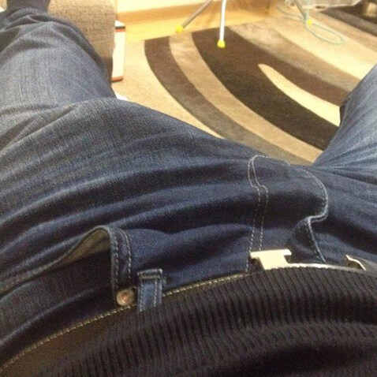

Putem specula la nesfârșit dacă dimensiunea penisului unui bărbat contează. Există doar un singur răspuns posibil - DA! Are un impact nu doar asupra calității vieții sexuale și asupra numărului de parteneri, ci și asupra succesului, în mod direct. Nu ești de acord?
Să luăm câțiva sportivi celebri: Cristiano Ronaldo, David Beckham, LeBron James - ce au toți aceștia în comun nu este doar cariera lor sportivă fenomenală, ci și dimensiunea extraordinară a organului masculin .
Nu e de mirare că apar mereu în reclame la lenjerie intimă - au foarte multe de arătat! Fosta iubită a lui Cristiano, Irina Shayk, a sugerat mai demult că iubitul ei nu e bun doar pe teren, ci și în pat.
Printre actorii populari se numără foarte mulți proprietari ai unor „instrumente” mari: Robert Downey Jr., Liam Neeson, Jason Statham, Mark Wahlberg. Crezi că este doar o coincidență? Ei bine, eu nu cred asta. Dimensiunea penisului are un impact direct asupra succesului.
Robert Tomescu psihologCercetările realizate de colegii mei din Israel în 2015 au demonstrat o legătură directă între succesul unui bărbat și dimensiunea penisului său. Totul se rezumă la stima de sine, de fapt. Proprietarii unor instrumente mari, de regulă, au o stimă de sine foarte ridicată. Ei pot găsi cu ușurință un limbaj comun cu femeile, chiar dacă nu arată extraordinar; pot găsi ușor un loc nou de muncă, interviurile nu sunt stresante pentru ei, e doar un pretext pentru a arăta cine sunt. Chiar dacă nu reușesc să facă ceva, vor avea mereu un gând de consolare la dispoziție: „Cel puțin am un penis mare”, iar problemele lor vor părea mai mici.
Acest lucru ridică întrebarea: ce ar trebui să facă bărbații care nu sunt chiar atât de bine dotați de la natură? Nu vă faceți griji, există o soluție. Vedetele o dovedesc chiar ele. Nu toate sunt bine dotate de la natură!
Să-l luăm de exemplu pe Leonardo DiCaprio. A jucat în zeci de filme, este un actor talentat, dar nu a reușit să câștige un Oscar. A primit statueta mult râvnită abia în 2016. Dar iată care e cea mai nebună parte: a fost exact anul în care paparazzi au reușit să-l surprindă în vacanță cu un tub suspicios în mână. Leo, fără exagerare, nu se despărțea de el. Editorii au făcut cercetări și au descoperit că remediul este , un gel pentru mărirea penisului.
A fost conceput de savanții britanici acum câțiva ani, pentru persoanele de pe lista de top. Remediul costa foarte mult, doar milionarii și-l puteau permite. Însă anul trecut, unul dintre băieții norocoși, inspirat de rezultate, a decis să sponsorizeze producția la scară largă a gelului. Acum, oricine își poate mări penisul și își poate schimba viața în bine. este disponibil pentru public, se vinde pe site-ul oficial.
Alan Welch, urologEste un produs de ultimă generație. Componentele active ale gelului penetrează în țesuturi. Creșterea penisului este obținută printr-un flux sanguin intensificat și elasticitatea îmbunătățită a țesuturilor. Acestea se întind și devin mai mari în mod natural. Nu vă așteptați la rezultate fenomenale, pregătiți-vă să obțineți 3-5 cm garantat. »
Revista noastră a decis să efectueze un mic experiment și să verifice dacă chiar este atât de eficient. L-am comandat de pe site-ul oficial și l-am oferit spre încercare la patru dintre angajații noștri, pentru o lună.
Desigur, nu le vom publica portretele pentru a le proteja confidențialitatea. Dar puteți vedea rezultatele cu ochii voștri. Creșterea a fost de la 2,5 la 5 cm!
Rezultatele obținute prin utilizarea
Unul din cei patru angajați și-a găsit o iubită după experimentul nostru, altul a fost promovat. Penisul mare le deschide bărbaților orizonturi noi!
Comentarii
18Sunt de acord 100%. Șeful nostru are un penis atât de mare, că abia îi încape în pantaloni. Când merg în biroul lui, nu mă pot uita în altă parte. Dar nu asta e ideea. La vârsta lui, 25 de ani, e deja directorul comercial al companiei. E foarte încrezător și un șef foarte strict. Nu pot decât să-mi imaginez cum mă pedepsește pe birou :)))
Cu siguranță ai mai multă încredere în tine când ai o sculă uriașă în pantaloni. Și eu sunt un norocos
Îmi amintesc un film cu Mark Wahlberg în care și-a arătat scula. Dacă nu e photoshop, atunci e uriaș.
Vă pot spune povestea mea despre . Inițial, am vrut să-mi măresc penisul prin operație, dar mi s-a spus că ar putea exista consecințe. Am decis să încerc prima dată gelul. Pe scurt: la început nu a existat niciun efect, deloc, doar o senzație ușoară de furnicători. Nu a crescut în primele două săptămâni. Apoi a început brusc să crească. Penisul meu a crescut cu 3,2 cm în două luni de utilizare. Super!
Da, am văzut pozele lui Leo într-o revistă. Bravo lui.
Îl ador pe Cristiano!!! Când e pe teren, mă uit doar la el și îmi imaginez ce are în pantaloni.
Am jucat în echipa locală de fotbal mulți ani. Evident, am văzut sculele tuturor la vestiar. Cei care aveau cele mai bune rezultate și au avut cel mai mare succes în cariera sportivă au penisul mai mare decât în mod obișnuit. Nici măcar nu m-am gândit la asta înainte.
Acum înțeleg de ce soțul meu e un ratat...
Nu e de mirare că actorii și-l măresc, sunt o mulțime de scene de sex, o sculă mică nu ar fi potrivită. Nu înțeleg de ce au sportivii nevoie de asta.
Leonardo avea o sculă mică, știu sigur. Îmi amintesc că un model s-a culcat cu el în anii ’90 și apoi a dat informația jurnaliștilor. Probabil de aceea nu au avut o relație de lungă durată. În sfârșit și-a rezolvat problema, mă bucur pentru el.
Și eu am utilizat . Scula mea a crescut cu 4 cm, mi-ar plăcea să fie și mai mare, dar e ok deja.
Nu-mi pot imagina cât de mare e LeBron. Afro-americanii au cu toții sculele mari.
După părerea mea, toate acestea sunt niște prostii. Dacă un bărbat are capul pe umeri (nu câțiva centimetri în plus pe sculă), va avea succes. Dacă e prost, nicio dimensiune a penisului nu-l va ajuta.
Am cumpărat și eu pentru soțul meu. I-am spus că e un lubrifiant obișnuit. Nu a înțeles de ce i-a crescut penisul cu 2 cm, așa că a trebuit să-i spun adevărul. Acum, sexul este incredibil!
Am citit undeva că milionarii au cu toții sculele mari. Cu cât e mai mare scula, cu atât va fi mai sus poziția lor pe lista Forbes!
Când am studiat psihologia la facultate, ni s-a povestit despre acest fenomen. Au fost făcute multe experimente. Cei care au sculele mari au mai mult succes în viață decât cei care au penisul mic. Există chiar și date statistice.